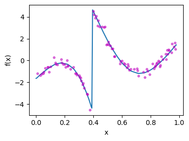

Example - Bayesian nonlinear regression
Setup
using PyPlot, Random, LinearAlgebra,
Distributed, DelimitedFiles, HiQGA.transD_GPImport data representing the "true" function
#
Random.seed!(200)
func_file = "/home/runner/work/HiQGA.jl/HiQGA.jl/docs/../examples/1D/stat/func2.txt"
x = readdlm(func_file, ',', Float64, '\n')[:,1]
y = readdlm(func_file, ',', Float64, '\n')[:,2]
σ, fractrain = 0.275, 0.5
ntrain = round(Int, fractrain*length(y))
ynoisy = similar(y) .+ NaN
linidx = randperm(length(y))[1:ntrain]
ynoisy[linidx] = y[linidx] + σ*randn(ntrain)
line = transD_GP.Line(ynoisy;useML=false, σ=σ, calcjacobian=true)
figure(figsize=(4,3))
plot(x[:], y)
plot(x[:], ynoisy, ".m", alpha=0.5)
xlabel("x")
ylabel("f(x)")
plt.tight_layout()
gcf()
Save the figure
savefig("jump1D.png", dpi=300)This page was generated using Literate.jl.